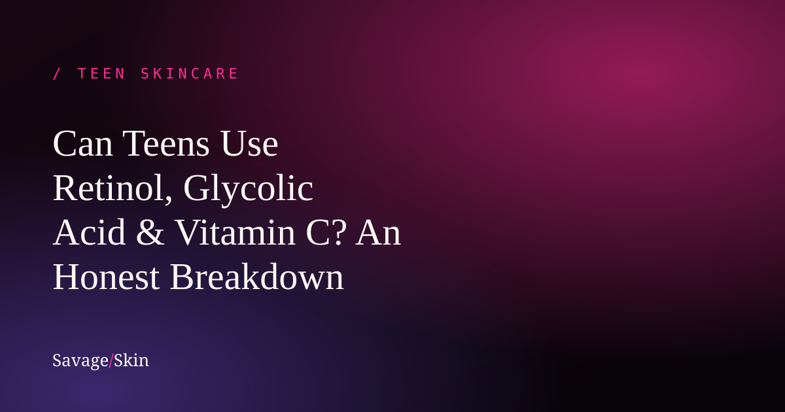

Can Teens Use Retinol, Glycolic Acid & Vitamin C? An Honest Breakdown

Short answer: some actives, sometimes, depending on your age and skin — but most teens are starting too strong, too soon. We sell actives. We could just tell you to buy everything. We're not going to, because using the wrong active at 13 is the fastest way to wreck your skin barrier and end up worse off than when you started. Here's the actually-honest breakdown, ingredient by ingredient.
First: what even is an "active"?
An active is an ingredient that creates a real, measurable change in your skin — exfoliating, boosting collagen, fading dark spots, killing acne bacteria, etc. They're powerful, which is exactly why they need respect. The "more = faster results" instinct is wrong with actives. More usually = irritation, a damaged barrier, and more breakouts.
Rule of thumb for teens: introduce one active at a time, start at the lowest strength, and use it 2–3x a week before going daily. If your skin gets red, stingy, or flaky, back off.
Salicylic acid (BHA) — ✅ usually teen-friendly
This is the most teen-appropriate active out there. It's oil-soluble, so it gets into pores and clears out the gunk that causes blackheads and breakouts. A low-percentage salicylic acid cleanser or spot treatment is a reasonable starting active for oily, acne-prone teen skin. Start a few times a week.
Benzoyl peroxide — ✅ for active acne (with care)
Great for inflammatory acne (the red, angry kind) because it kills acne bacteria. Start low (2.5%), expect some dryness, and moisturize. It bleaches fabric, so don't ruin your good pillowcase.
Glycolic & lactic acid (AHAs) — ⚠️ older teens, go slow
AHAs exfoliate the surface of your skin — great for texture, dullness, and fading dark marks. But they also increase sun sensitivity and can easily over-exfoliate young skin. If you're a younger teen, you don't need these yet. Older teens (16+) with specific concerns can introduce a gentle AHA like our Prime Time Toner (a blend of glycolic + lactic) — but only 2–3x a week, never alongside other strong actives, and always with daily sunscreen. If you're already using benzoyl peroxide or salicylic acid for acne, you probably don't need an AHA on top.
Vitamin C — ⚠️ optional, older teens
Vitamin C is an antioxidant that helps with dark spots and protects against environmental damage. It's not a need for teens, but it's relatively low-risk in the right form. A high-strength vitamin C like the 15% L-ascorbic acid in our Power Fix Spot Corrector is genuinely effective for fading post-acne marks — but it's a targeted treatment, best for older teens and young adults dealing with stubborn dark spots, not a daily essential for a 13-year-old. If you're younger, your sunscreen is doing the heavy lifting here anyway.
Retinol / retinoids — ❌ skip it (with one exception)
Here's the one we'll be blunt about: teens do not need over-the-counter retinol for "anti-aging." You have nothing to anti-age yet. Your collagen is thriving. Starting retinol early just irritates your skin for no benefit.
The one exception: prescription retinoids (like tretinoin or adapalene) for acne, given by a dermatologist. That's a real, evidence-based acne treatment — totally different from buying a random "youth serum" online. If acne's a problem, see a derm; don't DIY retinol.
The "skin barrier" warning nobody gives you
Almost every teen skincare disaster comes from the same place: too many actives at once, used too often, with no moisturizer or sunscreen to back them up. Your skin barrier is the wall that keeps moisture in and irritants out. Blow through it with acids and exfoliants and you get the "I used everything and now my skin is freaking out" spiral. If that's you, stop all actives, just cleanse + moisturize for a couple weeks, and let your barrier heal. We break this down fully in our skin barrier repair guide.
Quick reference
| Active | Best for | Teen verdict |
|---|---|---|
| Salicylic acid | Oily, clogged, acne-prone | ✅ Good starter |
| Benzoyl peroxide | Inflammatory acne | ✅ With care |
| AHAs (glycolic/lactic) | Texture, dark marks | ⚠️ 16+, go slow |
| Vitamin C | Dark spots, dullness | ⚠️ Optional, older teens |
| Retinol (OTC) | "Anti-aging" | ❌ Not needed |
| Prescription retinoid | Acne | ✅ Only via a derm |
Frequently asked questions
What age can you start using actives?
Gentle acne actives (salicylic acid, benzoyl peroxide) can start in the early-to-mid teens if you have acne. Stronger acids and vitamin C are better for older teens. Retinol for anti-aging isn't needed in your teens at all.
Can a 13-year-old use vitamin C serum?
It won't hurt in the right form, but it's not necessary. Sunscreen matters far more at that age.
Is glycolic acid safe for teens?
For older teens, in low strength, a few times a week, with sunscreen — yes. For younger teens, skip it; you likely don't need it.
How do I know if an active is too strong for me?
Redness, stinging, flaking, or breakouts that get worse after starting it. Stop, simplify to cleanse + moisturize, and reintroduce more slowly.